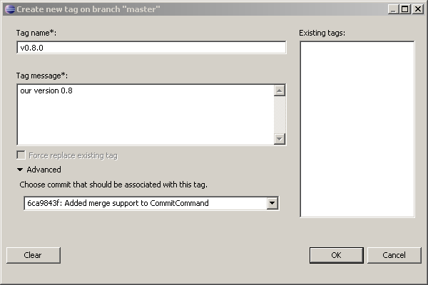

| Tags |

|
|

|
| Merge |
|
Patches |
Creating a Tag
- Select "Team" -> "Tag..." from the project context menu.

- Enter the tag name
- Enter the tag message
- Optionally select the commit you want to tag (default is HEAD)
- Click OK to create the annotated tag
Replacing an Existing Tag
What to do if you tagged the wrong commit or ended up with some sort of typo ?
- If you didn't yet push this out just replace the tag and you are done.
- If it's already published you shouldn't replace the tag but use a new name since otherwise you have to tell everybody who got the old tag to replace it manually with your updated one. This is because, Git does not (and it should not) change tags behind users back. So if somebody already got the old tag, doing a git pull on your tree shouldn't just make them overwrite the old one.
So if your old tag wasn't yet pushed you may correct it in the following way :
- Select "Team" -> "Tag..." from the project context menu.

- Select the tag you want to replace from the list of existing tags
- or start typing any part of the tag you look for into the Tag Name field, this will filter the list of existing tags to those tags which contain the string you are typing, then select the tag you want to replace
- Mark the checkbox "Force replace existing tag"
- Change the tag and press "OK"
Light-weight and signed tags are not yet supported by EGit, use command line git tag or git tag -s as a workaround